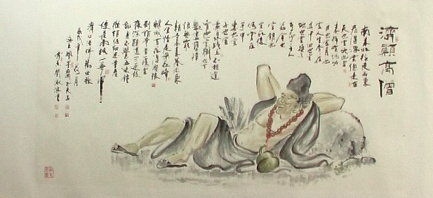
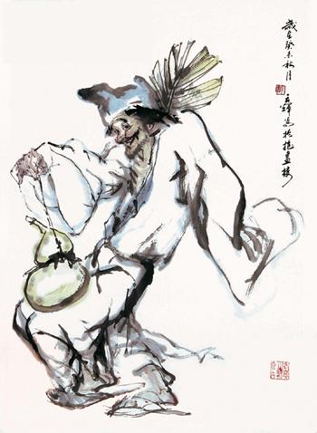
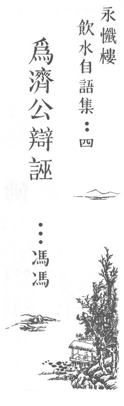

为济公辩诬
冯冯
中国佛教小说，最深入民间的，当推“济公传”。其受欢迎之程度，不亚于“西游记”。一提济公和尚，无人不知；也无人不敬仰。
济公是一位济世度厄的和尚。他佛法无边，神通广大；经常拯救苦难，济贫扶困。济公是确有其人，在南宋高宗年间，曾住持西湖净慧寺与灵隐寺；弘法利生，普渡众生。施粥赈济，赠药义诊，救活无数贫苦的灾民──当时金国侵宋，北方战祸频仍。灾民扶老携幼，逃往江南，数以百万计。济公和尚遂发动临安（杭州）的官民士绅，共襄佛教，济世扶危，活人无数。于是得天下之景仰，尊称为活佛。

修苦行的济公精通医术，当时夙夜不懈，救治难民的病患，竟至废寝忘餐，连僧袍也无暇更换，衣敝亦不自觉。他不修边幅，不拘礼仪形迹；他慈悲和蔼，旷达恢谐，谈笑风生。
民间传颂济公和尚之德，辗转相传，以讹传讹，越来越走了样儿；以致后来说书的，竟把济公的形象形容得像“济公传”中所描画的那种造型：
“脸不洗，头不剃；醉眼乜斜睁又闭。若痴若傻若癫狂，到处恢谐好要戏。”
“破僧衣，不趁体；上下窟窿钱串记。丝绦七断与八结，大小琫鞑接又续。”
“破僧鞋，只剩底，精光两腿双胫赤。涉水登山如平地，乾坤四海任逍遥。”
“经不谈，禅不理；吃酒开荤好诙谐。警愚劝善度群迷，专管人间不平气。”
济公又被形容为：“济颠僧，短头发有二寸多长，一 脸泥；破僧衣，短袖缺领，腰系绒绦，疙里疙瘩；光着两脚，拖着两只草鞋，褴褛不堪，酒醉疯癫。”
 “济公传”第十六回甚至于说“济公庙内卖狗肉”
“......济公醉熏熏顺着西湖苏堤，口唱狂歌，来至飞来峰灵隐寺山门外，看守山门的和尚说：‘济师傅你拿的什么东西？’
济公说：‘我带来的是狗肉，你两位吃点。’
两僧说：‘不行，我们吃素。出家人讲究三皈五戒 ，你快扔了罢！’
济公说：‘什么叫三皈？哪叫五戒？’
静明说：‘你还是是个和尚，连三皈五戒都不懂！三皈是皈佛、皈法、皈僧；五戒是戒杀、戒盗、戒淫、戒妄、戒酒。你快把狗肉扔了罢！……’
济公说：‘你二人懂什么？别阻我高兴!我到庙里给监寺吃狗肉。’
济公到了里面，在大雄宝殿前，把狗肉放下，坐在一旁，叫道：‘有买狗肉的来买哉！’”
这一段书，若拿文学观点来看，是极为突出生动的。把一位游戏人间的和尚形容得极为放纵不羁。可是却未免太冤枉诬害了济公和尚了。济公何尝吃狗肉？何曾卖狗肉？更无放纵至于把狗肉弄到庄严的灵隐寺大雄宝殿来叫卖之理！
吃狗肉，在中国古代，是很普遍的。刘邦、樊哙，便是出名的“屠狗”之辈。狗肉是一般的肉食之一，到了后来，才逐渐泯除，只剩下一部份“老广”嗜食狗肉。大概到了唐宋时代，中原、江南，巳很少人吃狗肉了。不谈济公是位有道高僧，就算他是俗子，他在当时的帝辇之下，江南人素称富饶，精于饮食。依情理判断，似并无吃狗肉之风。吃“臭豆腐”则有之，江浙人不少喜吃“臭豆腐”，苏杭街巷到处有挑卖臭豆腐的，臭薰街市，或者原籍天台的济公也曾爱吃一点“臭豆腐”，说书人以讹传讹，把“臭豆腐”传为“狗肉”。
或许也根本就是杜撰！济公和尚出家于敕建的名刹，法规与戒律至严，岂有寺僧可以随便到外面吃酒吃荤之理？亦不会容许僧人在大雄宝殿如此的不庄敬。
虽说六祖也曾被环境所迫，南奔后混迹于猎人群中，与众同食，勉强吃些“肉边菜”维生。但那不过是权宜之计，并非嗜好。
济公亦何曾装疯装癫？又何曾衣衫褴褛，似一叫化，穿了破草鞋“梯拖梯拖”的醉步硠跄，到处讹诈荤酒肉食？
以文学观点看，“济公传”并非一本完整的作品。有头无尾，渗杂无数窜入的其他情节与文字，散乱无章。我曾拥有一部日本重版的古本“济公传”，文字较佳，也较少窜改，可称善本。可惜我巳遗失该本。有时看到坊间的芜本无人整理，真堪叹息！
济公传把济公塑造成一位这样狂放不继的个性，这一点是极其成功的。愚见认为它应被视为一部突出的小说。它劝善儆恶，深入民间，成就高于好些文学作品。虽然它有很多地方曲解佛教，但在大体上来说，仍是一部极其成功的宣扬佛教的小说；功堪补过。
至于它把济公塑造成那个样子，我认为是由于说书人曲解了佛禅的“不执着”。误以为只些为“明心见性”，就可以放浪形骸，恁意妄为；甚至于吃狗肉发酒疯也不要紧，以为越放纵越有禅。其实这是很错误的。
当前在美国、加拿大的不少青年人，从“嬉皮士”、“花的子女”至今，不梳不洗，吸毒滥交，放纵胡为，反抗社会，不顾道德，无视法律，荒淫无耻。居然口口声声说是“顿悟”了“禅机”。只看过少许妄谈禅理的外道书刊，就以为“禅悟”，就可如此任意妄为了。这些也是极大的错误；更甚于“济公传”作者的荒谬。
佛家讲的“不执着”，是教我们修行的人，不要过于刻板，钻入了牛角尖而变成“入迷”，致心生魔障。却并非教我们任意欲为的去违反佛家的戒律。
假如我们又吃狗肉，又酗酒，又赌钱，又参加什么“性解放”，乱来一番；又吸大麻烟，又打海洛英，又打架，乱骂人，又偷又抢，又说谎欺骗，那么，就算讲多少“口头禅”，说什么“顿悟”，也不过是自欺欺人罢了。
要学佛禅，必须时常亲到佛寺，聆听有道德而佛学高深的和尚讲解，我们才能逐渐了解佛经的真义，而不致曲解。
而且，我认为无论是出家或在家，我们都应该恪守戒律法规，因为戒律是我们藉之以锻炼及克制自己的修行方法之一。我们若要修行学佛，断不可放弃戒律，否则就是自堕魔道。
真的济公是一位有道高僧。他毕生辛勤，乐善好施；茹素守戒，弘法济世；从不曾酗酒吃狗肉。但愿我们勿被小说的歪曲形象所惑而且曲解了禅意。
原载万佛城《金刚菩提海》第123期：1980年08月1日
转贴来源：万佛城《金刚菩提海》